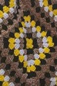
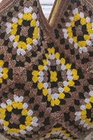

Crochet Tote Bag
Estimated Time: 3 - 4 Hours
Materials Needed
- 5mm Crochet Hook
- Cotton Yarn (Dark Brown)
- Cotton Yarn (Yellow)
- Stitch Marker
- Yarn Needle
- Scissors
- Measuring Tape (Optional)
Abbreviations
- MR = Magic Ring
- ch = Chain
- sc = Single Crochet
- hdc = Half Double Crochet
- dc = Double Crochet
- inc = Increase
- sl st = Slip Stitch
- FO = Fasten Off
Pattern Instructions (Crochet Tote Bag)

Step 1 (Granny Square - Yellow)
3 ch (counts as dc) 2 dc ch 2 3 dc ch 2 3 dc ch 2 dc ch 2 sl st to beginning
Step 2 (Granny Square - Dark Brown)
Corner: 3 dc ch 2 3 dc
Each side: 3 dc into side space
Repeat around.
Join.
Step 3 (Granny Square - White)
Every corner: 3 dc, ch 2, 3 dc
Every side space: 3 dc
Step 4 (Granny Square - Medium Brown)
Every corner: 3 dc, ch 2, 3 dc
Every side space: 3 dc
Step 5 (Granny Square - Dark Brown)
Every corner: 3 dc, ch 2, 3 dc
Every side space: 3 dc

Step 6
Repeat the previous steps 13 times then stitch the granny squares together with Dark Brown yarn.
Step 7 (Finished Tote Bag)
Your crochet tote bag is now complete!
It is perfect for carrying books, groceries, or everyday essentials.